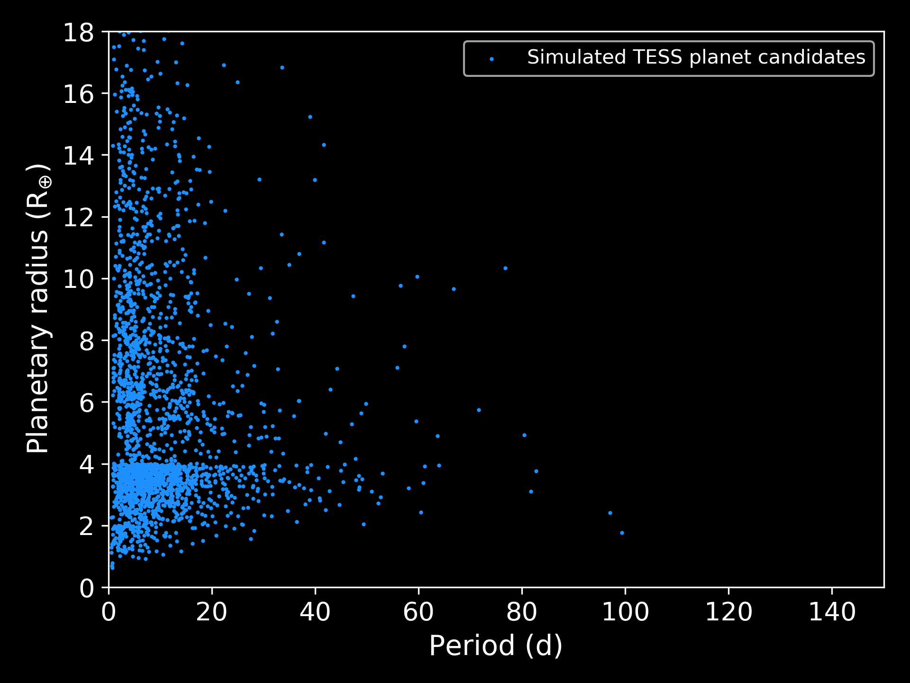
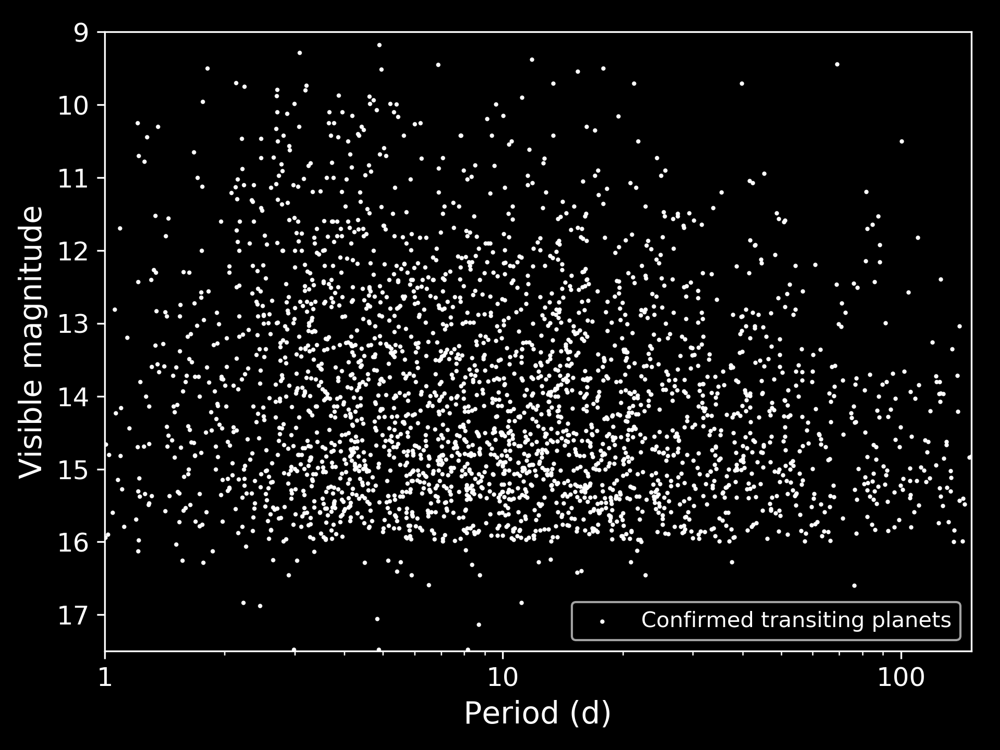

TESS favors short periods
The mission's observing baseline makes repeated transits easiest to collect for planets close to their stars.
A TESS follow-up survey · established 2019
Recovering the long-period planets that TESS may see transit only once—before a one-time dip becomes a lost ephemeris.
The observing problem
TESS discovers planets by watching stars dim during transits. Short-period planets repeat quickly. For longer-period planets, a TESS sector may catch only one event, leaving the orbital period poorly constrained and making the next transit difficult to recover from the ground.

The mission's observing baseline makes repeated transits easiest to collect for planets close to their stars.
A long-period planet can cross its star once in the available data. Without another transit, its ephemeris rapidly becomes uncertain.
Longer-period planets around bright stars are unusually useful for precise follow-up and atmospheric characterization.

One Hit Wonders uses targeted ground-based photometry to search predicted transit windows. A recovered event sharply improves the orbital period and makes future follow-up schedulable.
The dedicated telescope at Deep Sky West lets the survey pursue long windows and repeated opportunities that are awkward for heavily subscribed facilities.

Moving to longer periods opens a population at lower stellar irradiation than the canonical hot-planet sample. Around bright stars, recovered ephemerides can enable mass measurements and atmospheric observations that connect hot exoplanets with the cooler worlds of our own Solar System.
The team
The survey was developed during Carl Ziegler's Dunlap Fellowship and began observing in September 2019, combining small-telescope operations, automated photometry, and student-accessible exoplanet follow-up.
Exoplanet astronomer, survey builder, and telescope/instrumentation researcher.
Carl's current site →